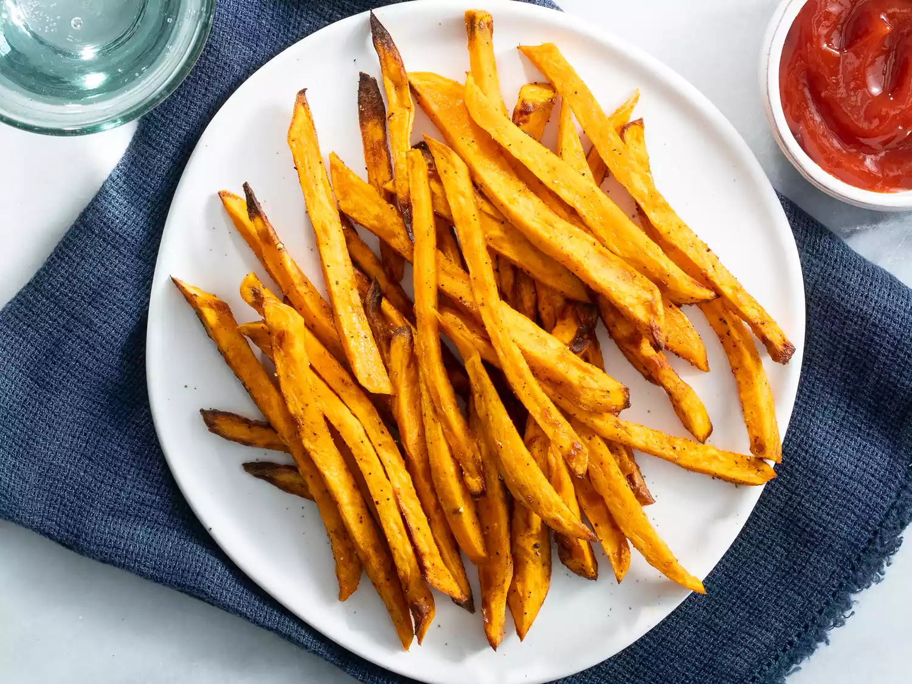
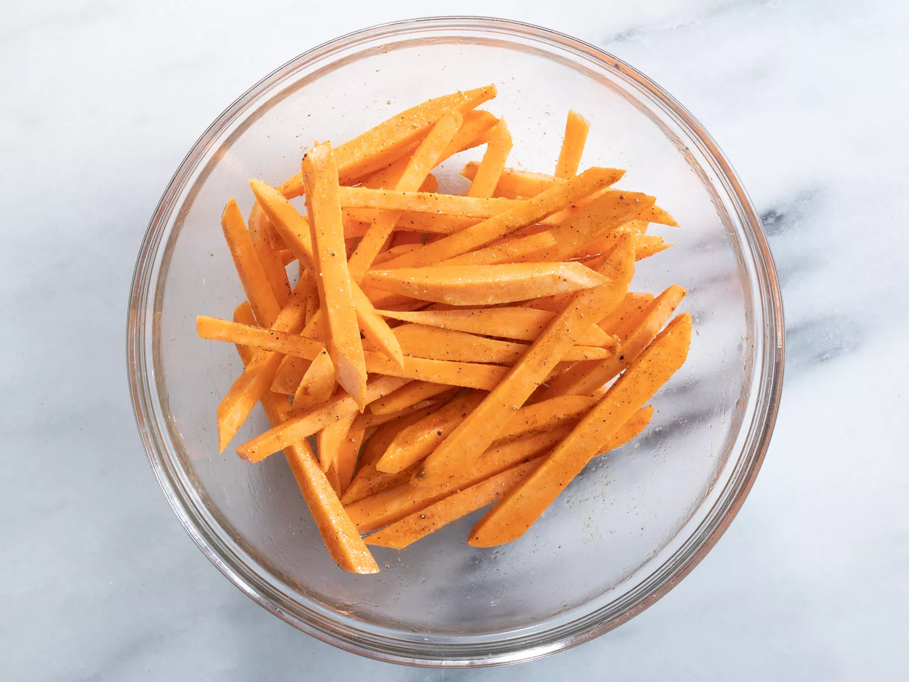
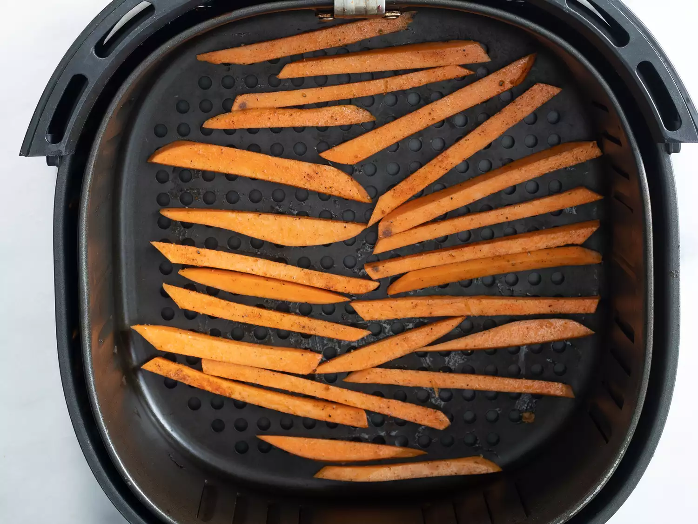
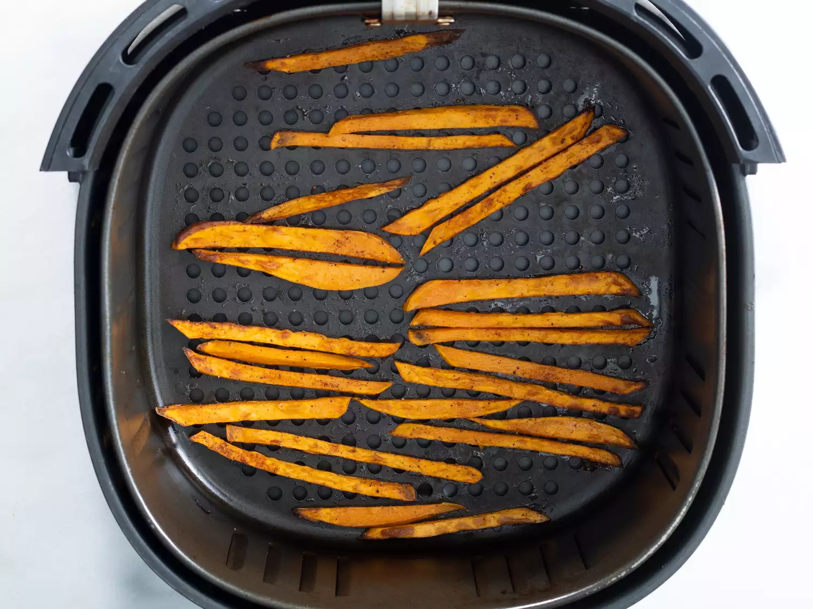

Home
Air Fryer Sweet Potato Fries

These are the best air fryer sweet potato fries! They are so crispy, flavorful and easy to make in the air fryer. Here I share two methods, a quick method that is delicious and a longer method that comes out perfectly crisp. Both taste great, feel free to use the method you prefer! Since you only need a little oil, they are also lighter and healthier than deep frying. One of my first recipes I ever made with my air fryer.
Ingredients
- 1 medium sweet potato, peeled
- 1 tablespoon canola oil
- 1/2 teaspoon kosher salt
- 1/4 teaspoon pepper
- 1/8 teaspoon garlic powder
- 1/8 teaspoon ground sweet paprika
Steps
- Preheat the air fryer to 400 degrees F (200 degrees C).
- Cut sweet potato into 1/2-inch wide fries. Place in a bowl with canola oil; toss to coat. Season with salt, pepper, garlic powder, and paprika; mix until all fries are evenly coated.

- Working in batches if necessary, place an even layer of fries in the air fryer basket.

- Cook in the preheated air fryer until golden, about 10 minutes. Repeat to cook remaining fries.

- Serve hot and enjoy!